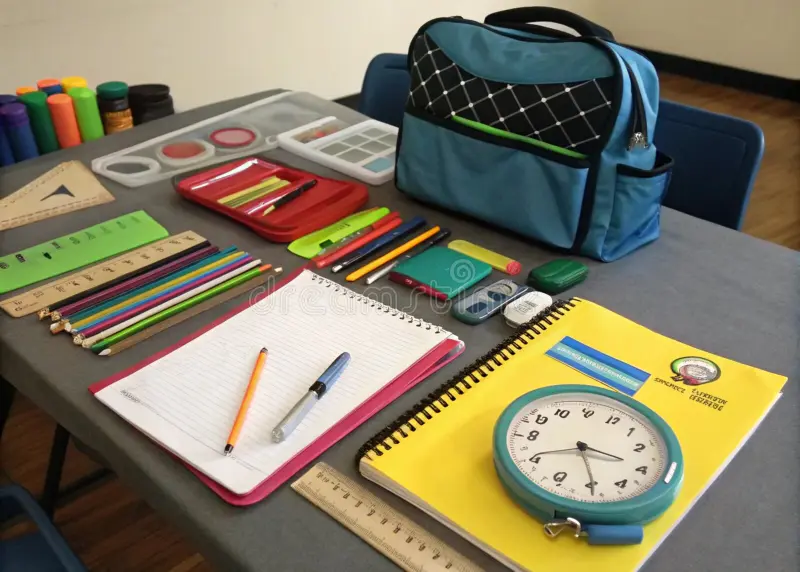

Programme 01
School supplies
Collect and distribute items such as exercise books, pens, pencils, rulers, crayons and school bags according to the needs identified by partner schools.
Our proposed programmes focus on the everyday resources and encouragement that help primary school children participate in learning.

Collect and distribute items such as exercise books, pens, pencils, rulers, crayons and school bags according to the needs identified by partner schools.

Explore reading circles, basic numeracy activities and learning sessions delivered with appropriate school or community partners.

Help schools build access to age-appropriate storybooks and other materials that encourage reading and curiosity.

Work with school representatives to understand priorities, coordinate support and ensure resources are directed where they are needed.

Invite individuals and businesses to contribute suitable supplies or funding towards clearly described educational projects.

Explore safe, age-appropriate activities that help learners build confidence, set goals and feel encouraged about their education.
These are planned service areas, not a claim that programmes are already running. Activities will depend on funding, school partnerships, volunteer capacity and child-safeguarding arrangements.
We aim to coordinate assistance with schools and community partners so that support responds to real needs and can be tracked.
Speak with school representatives and agree on priority resources or learning activities.
Confirm available supplies, funding, delivery arrangements and responsibilities.
Distribute support through agreed channels while protecting children's privacy and dignity.
Record appropriate totals and feedback, then share a clear update with supporters.